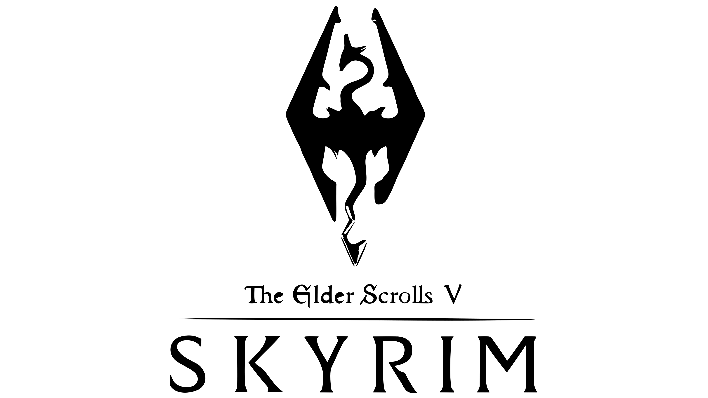

The Elder Scrolls V: Skyrim é um jogo eletrônico de RPG de ação desenvolvido pela Bethesda Game Studios e publicado pela Bethesda Softworks. É o quinto jogo principal da série The Elder Scrolls, seguindo The Elder Scrolls IV: Oblivion. Foi lançado em 11 de novembro de 2011 para Microsoft Windows, PlayStation 3 e Xbox 360. É o primeiro jogo ocidental da história a receber 40/40 (nota máxima) na conceituada Famitsu. O jogo conseguiu três prêmios no VGA 2011, incluindo Jogo do Ano.